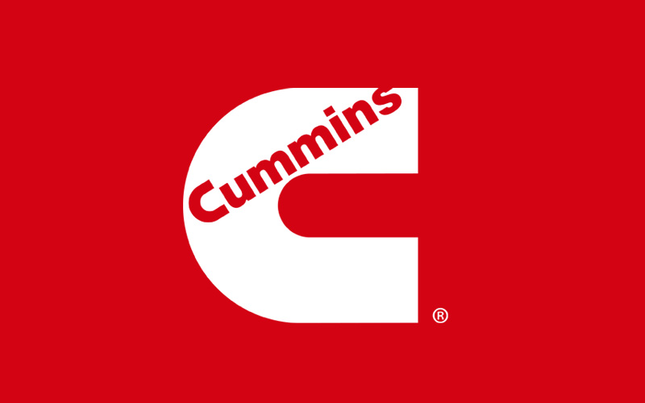

Education
Brigham Young University - Marriott School of Business
Bachelor of Science in Finance, Minor in Spanish
- GPA 3.98/4.00
- ACT 33/36, 98th Percentile
- Lifetime member of the Golden Key International Honor Society
- Member of The Honor Society of Phi Kappa Phi
- BYU Marriott School Dean's List, Fall 2019 and Winter 2021
- Member of the BYU Finance Society
Experience
 Cummins, Inc. Jun 2021 - Aug 2021(NYSE: CMI, Fortune 200 Company)
Finance Intern, Engine Business Unit - Supply Chain Finance Team
- Increased North America customer gross margin reporting efficiency by 66% for the Engine Business Unit
- Facilitated in-depth analysis of premium freight costs due to global supply chain shortages by creating a Power BI dashboard to breakdown freight by date, plant, mode of transportation, direction, and key influencers
- Assisted in reducing aged goods received-not invoiced for the Cummins Darlington Engine Plant
(Founder friendly, Salt Lake City based, early stage VC firm)
Analyst Intern - Diligence Team
- Performed extensive due diligence and analysis of the market size, headwinds, tailwinds, and competitive landscape of a data anomaly detection software company to recommend investment as a syndicate in their $10M Series A round
- Researched exit strategies of a data anomaly detection software company by analyzing revenue, cash flow, and comparable acquisitions of potential acquirers including Amazon, SAS Institute, Elastic, and Dataiku
- Prepared pitch decks for potential data analytics software investment deals for management review
Analyst Intern - Sourcing Team
- Led meetings with 60+ CEO's and founders of sourced companies to assess key performance indicators
- Sourced, evaluated, and recommended 60+ potential enterprise software investment deals to management team
- Updated and maintained 200+ company profile records using HubSpot for organized deal consideration and diligence
Leadership & Service
Chile Concepción Mission Jul 2017 - Jul 2019(The Church of Jesus Christ of Latter-day Saints)
Volunteer Representative
- Directed efforts of 20+ volunteers to increase collective performance by 75% by analyzing weekly progress reports and planning for continued improvement
- Trained 50+ volunteers individually and in group settings on leadership skills and effective goal setting
(Conexiones Program at Provo Peaks Elementary)
Volunteer Interpreter
- Volunteered as a Spanish interpreter to help local elementary school students learn English, basic math, and other school subjects
Awards, Skills, & Interests
- Microsoft Office Suite
- Microsoft Power BI and Tableau
- VBA, SQL, HTML, CSS (Basic Proficiency)
- Pitchbook
- Hubspot
- Spanish Fluency (reading, writing, speaking)
- Eagle Scout, Boy Scouts of America
See some of my other posts: